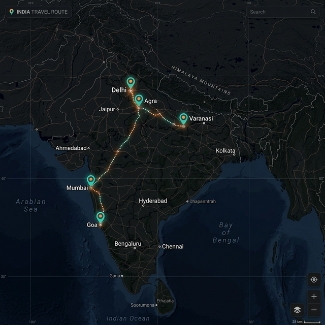

Trip Logs 5

Shinjuku, Tokyo
Landed at Narita. Took the Narita Express to Shinjuku. The neon
lights at night were absolutely breathtaking!

Senso-ji Temple, Asakusa
Visited the iconic Buddhist temple at dawn before the crowds. The
incense smoke and prayers were deeply meditative.

Shibuya Crossing
Experienced the world-famous scramble at peak hours. 3000 people
crossing at once — absolute organized chaos!

Mt. Fuji Viewpoint, Hakone
Day trip to Hakone — crystal clear day with a perfect cone view of
Fuji. Took the ropeway over volcanic vents.

Harajuku, Takeshita Street
Tried rainbow cotton candy and the famous crepes. Street fashion
was vibrant — so many unique styles!

India Road Trip
5 pins · Dec 2024